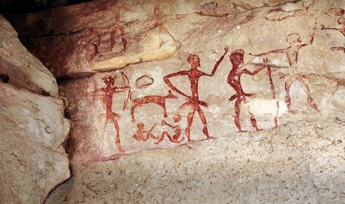

Talvez a tarefa mais complexa das ciências humanas, principalmente para a história, arqueologia e antropologia, é definir onde começa o “humano”, isto é, como datar a origem da
humanidade? Dentro dos estudos escolares de história há um recurso para ponderar esse impasse, adequando o que pode ser aprendido com aquilo que é pesquisado por especialistas.
Trata-se da divisão entre Pré-História e História. A “História”, didaticamente falando, tem seu início com o aparecimento das primeiras civilizações, ou seja, com o surgimento
das primeiras cidades, os primeiros sistemas políticos e sistemas de escrita. Já a Pré-História corresponderia ao período anterior às primeiras civilizações, mas que apresenta
elementos e aspectos que, de uma forma ou de outra, prepararam o terreno para o advento desta.
Pré-história é um período que compreende aproximadamente cinco milhões de anos, tendo se encerrado por volta de 6 mil a.C. Esse período é alvo de estudos multidisciplinares,
isto é, envolve especialistas como arqueólogos, biólogos, paleontólogos, químicos, historiadores etc. Mas em termos propriamente restritos à linguagem historiográfica
(utilizada por historiadores profissionais), a Pré-história pode ser qualificada como o período anterior ao aparecimento das cidades (organização urbana) e da escrita.
Esse longo período é geralmente dividido em duas fases: o Paleolítico, ou Idade da Pedra Lascada, e Neolítico, ou Idade da Pedra Polida.
Geralmente, em uma tentativa de definição precária, tendemos a chamar nossos antepassados do período em questão de “homens pré-históricos”.
Mas há uma denominação mais apropriada para isso: hominídeos. Os hominídeos pertencem a uma família taxonômica classificada pela Biologia e intitulada hominidae.
Nós, humanos, estamos dentro dessa “família”, assim como os chimpanzés. Todavia, não somos da espécie dos chimpanzés e, muito menos, os hominídeos que nos precederam.
Os hominídeos conseguiram, ao longos de milhões de anos, desenvolver ferramentas e utensílios domésticos complexos. Conseguiram dominar o fogo, que passou a ser utilizado
tanto para o aquecimento quanto para cozinhar alimentos, e conseguiram ainda o mais extraordinário: desenvolver sistemas simbólicos, como urnas e câmaras funerárias,
esculturas e pinturas rupestres.
Os hominídeos mais antigos são do gênero Ardipithecus e Austrolopithecus. O Ardipithecus ramidus, por exemplo, tem sua presença na Terra, confirmada por especialistas,
variando entre 5 e 4 milhões de anos. Já a do Australopithecus afarensis varia entre 3,9 e 3 milhões de anos. As feições e modos de comportamento desses hominídeos eram
bem menos versáteis que do gênero Homo que viria depois. A atuação do Homo habilis, por exemplo, variou entre 2,4 a 1,5 milhões de anos. A do Homo erectus, entre 1,8 milhão
a 300 mil de anos. Já a do sucessor desse último, Homo neanderthalensis, variou entre 230 e 30 mil anos. O Homo sapiens, que constitui o ser humano tal como o conhecemos hoje,
apareceu, provavelmente, há cerca de 120 mil anos, como uma variação do Homo neanderthalensis.
De forma geral, esses grupos de hominídeos são classificados como caçadores e coletores, isto é, não possuíam fixidez de território. Eram, basicamente, praticantes do nomadismo.
A arqueologia e a história costumam, por meio de sistemas de datação, como o do Carbono 14 e da termoluminescência, dividir a ação desses hominídeos nas seguintes fases:
o Paleolítico, ou Idade da Pedra Lascada, e o Neolítico, ou Idade da Pedra Polida. Essas divisões ocorrem também por meio do grau de domínio
da tecnologia rústica. O uso de artefatos como pedra, madeira, pedaços de ossos e cerâmica é determinante para tal classificação.
O período Paleolítico é o mais longo, indo de 3 milhões a.C. até 10.000 a.C. Ele é caraterizado pelo nomadismo e pelo uso ainda precário de utensílios. Foi nesse período que apareceram
os hominídeos expostos acima. No Neolítico, segunda e mais importante fase da pré-história, ocorreu a revolução da “pedra polida”, o que possibilitou o sedentarismo e as primeiras formas
de agricultura sistemática. Foi dentro da “revolução neolítica” que nasceu o Homo sapiens e, por consequência, as primeiras civilizações, caracterizadas pela fundição de metais, como o cobre e o ferro.
A última fase da Pré-História seria a Idade dos Metais, que corresponde ao período em que o homem passou a ter um pleno domínio do fogo e começou a fazer a fusão de metais, obtendo o bronze, por exemplo.
Esse período data de 6 a 5 mil anos atrás e coincide com o aparecimento das primeiras civilizações.
Outro ponto a destacar-se com relação à Pré-História e aos documentos estudados por especialistas dessa área é a Arte Rupestre, que comporta os primeiros símbolos e registros
da ação do Homem, possuindo assim um valor inestimável.

Pintura Rupeste.